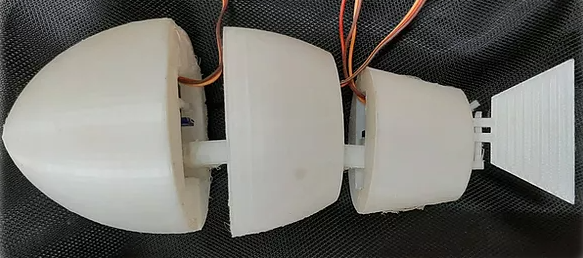

Projects
Embedded Systems
Sparse Recovery Algorithm on a Low-end FPGA
Source Code PresentationImplementation of Sparse Recovery Algorithm (Orthogonal Matching Pursuit) on a resource-constrained FPGA. This project has wide applications in areas such as Wide Field magnetic field imaging, Photography, Network tomography, etc.
FPGA Based Emoji Detector
DocumentationSecured 1st position in the GoPynq Competition, organized by Xilinx during Techfest'19. This required interfacing various components including web-cam with FPGA, essential for detection and processing while implementing algorithms such as PCA for Image segmentation and Emoji detection. The final round involved submission of a working protoype, competing with 30 other colleges across India.
Research Project: P-Quest Lab
Working on developing an FPGA based Feedback System and Control Protocols for the Spin-based Quantum Systems, primarily focussing on NV centers, ODMR and NMR experiments for high sensitivity magnetic sensing.
Ultra-fast Current-Voltage (I-V) curve scanner
Presentation User Manual Source CodeDeveloped and successfully tested an I-V tracer circuit for power semiconductor devices using pulsed I-V measurement technique. The module would be deployed for accelerated testing of solar panels, monitoring the health of by-pass diodes, in manufacturing lines and as testing measurement equipment for various purposes.
Control using Brainwaves
DocumentationDeveloped a single-channel low-cost circuit for Electroencephalographic(EEG) signal acquisition. This required designing a low-power noiseless filter bank to extract the frequencies of interest (8Hz-40Hz) and analyzing various techniques for feature extraction and classification of acquired signals.

Smart Paper Cutter
A Cost-effective and Environment-friendly cutter which segregates unused portion of the used paper, and thus capable of saving Rs 54k annually by reusing old papers with a peak power consumption of 12W. This was developed as a part of Inter IIT Tech meet 2k18, where we stood as the 2nd runner-up among 23 other IITs.
Smart Vending machine
DocumentationImplemented a cheap, power efficient and user friendly vending machine with safety features including sending sms to the vendor, informing about exhaustion of products or an attempt to damage the machine.
Computer Architecture
Static Timing Analysis Model
The model computes the execution time of a given set of low-level instruction codes for a class of register-to-register Vector Processors, following in-order execution. This also covers all the dependencies and constraints existing among various instructions.
Pipelined Processor Design
Developed a 6-stage Pipelined processor using VHDL, which was capable of executing 15 instruction sets using an 8-register and 16-bit computing system. This also involved optimizing the architecture performance by including Hazard mitigation blocks and Branch predictors.
Student Satellite Team
Star Tracker-based Attitude Determination System
AbstractA CubeSat-compatible modular Star Tracker-based Attitude Determination System to be tested on PS4-OP by ISRO. Currently developing an FPGA-based framework for storing and processing Star images onboard.
Advitiy
Advitiy is the 2nd student satellite of IIT Bombay, technically advanced and efficient version of the 1st, Pratham. As a member of the Electrical Subsytem, I was involved in the design of power distribution circuit, interfacing with peripherals and implementation of the control algorithm.
Web Development
CrakX - Transforming your Preparation
Download now! WebsiteApp to help navigate through the latest campus resources to boost placement and internship preparation. This has acquired 5k+ users since its launch, followed by appreciation from IIT Bombay and users across the country.
Robotics
Robotic Fish
A Robotic fish that was capable of maneuvering underwater. Designed the complete three dimensional model of the fish, which was later 3D printed and a control algorithm was implemented for maneuvering a 3-link manipulator with servo motors as actuators.
Other Projects
A Line follower bot - An arduino based automated line or path following 3-wheeled bot, based on the Proportional–integral derivative control(PID) algorithm.
XLR8 - An arduino based Bluetooth controlled 4-wheeled bot that overcame an obstacle course and passed the XLR8 competition successfully.
Machine Learning
Handwritten Expression Solver
A Solver that recognizes handwritten mathematical expression from an image and subsequently evaluates it. This invloved segmentation of digits and symbols from the given image, and developing a 3-layered CNN for recognizing the segmented components.
Publications
-
An Approach to Star Tracker Design for Nano-Satellite Applications
Katla V., Lall A. et al.
NCSSTA '20: 2nd National Conference on Small Satellite Technology and Applications 2020 -
Survey and Analysis of Payloads for Missions on PSLV's Orbital Platform
Ranade A., Lall A. et al.
AIAA SciTech Forum, Nashville, Tennessee, USA, 2021